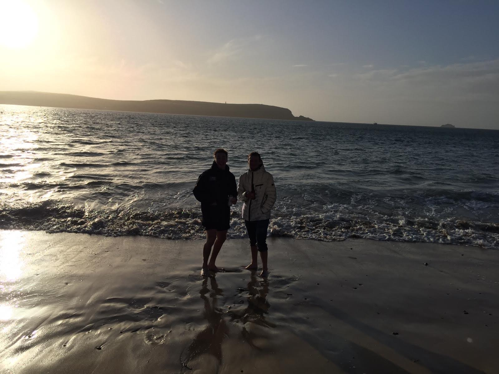
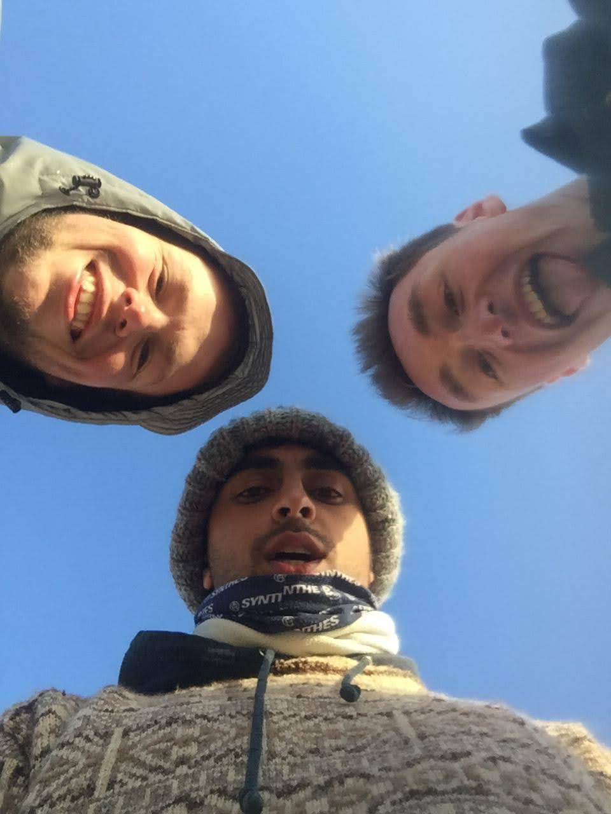
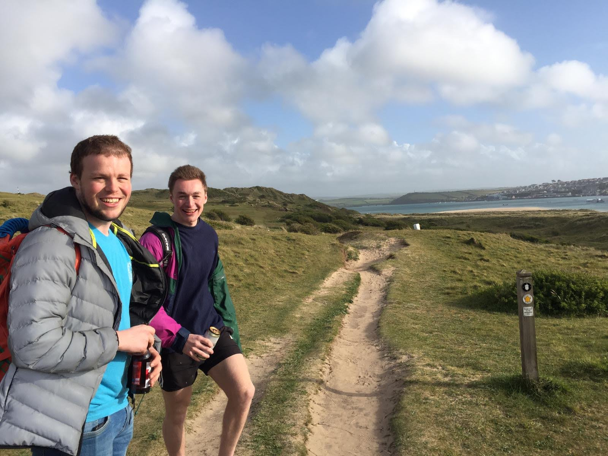

The original plan was just for a simple weekend away in the van for Arjun and myself, to Devon or Wales for some surfing and relaxing. However Arjun got in contact with Harry and we ended up making a plan to go to Cornwall and visit him for his Birthday as well.
Friday Evening involved what has become a standard rushed departure with Arjun and I just shoving everything
in the back of the van. However we got going and after getting almost aall the way to our night stop, the
battery and stop light appeared on the dash. This turned out to be the altenator but everything was still
working so we just plowed on.
We arrived at the spot overlooking Croyde beach and had to ditch the deck chairs and astro outside while we
slept. The lack of organisation in the van made it a bit annoying to set up, but the night was good other
than the shaking of the van when a vehicle occasionally drove past.
The next morning we got up and drove to a B&Q to try and buy a bottle of gas but apparently there was a national shortage. Afterwards we drove to the surf lesson in Woolacombe, which was good although admittedly rather a silly decision seeing as the instructor only talked us through the basics on the beach and was more worried about the beginners who were closer in which is understandable.
After the surf lesson we started the drive down towards Dunlop's, and I got a much needed nap whilst Arj drove the second half. The campsite Harry had booked for us was great and we parked up, Arj had a shower and I cleaned out the van and organised a bit as well as getting the artificial grass tied onto the roof.
We then longboarded our way to Harry's which was pretty fun down the hills, although I sat down and took the bag of beers so as I could break with both feet and be actually under control. The first hour or so at Harry's we sat on a bench in the garden and chatted with him and his Mum, catching up whilst having some champagne, beer and some brilliantly gooey brownies.
Harry then took Arjun and I to the beach and much to our delight the weather was glorious and the setting of an empty beach and beatiful view of a bay in the sun was an incredible way to spend the afternoon. The three of us continued drinking and actually got quite tipsy whilst catching up due to our very low tolerance. The drunken stroll home throught the golf course was entertaining before we arrived for dinner and more champagne at Harry's.
Dinner was brilliant even though it's all a bit hazy, we had prawn cocktails to start and then a great pasta dish before just generally chatting for the first time I could remember properly for a very long time. We then we got a lift back to the van from Harry's mum to save us skating down the hills at night while binned, which at the time I thought would be a good idea and so proves how bad an idea it really was.
The next morning the van wouldn't start evidnetly due to the faulty altenator we couldn't really do anything
about whilst on the trip, but luckily a camping neighbour was willing to use his little car to help jump
start it. So we then collected Harry and after some breakfast in Polzeath, got surfing as soon as the rental
place's opened. It was a good mornings surf, despite being mugged off by kids on top ride kayak/rescue
boards that were crusing in and out as we were fighting the waves and not moving.
The van started as the alternator had started working again on our drive to surfing, so after dropping Harry
off again and having some bacon sani's Arjun and I set off back to Bath as he still had to drive to Chester
that evening as well and didn't want to get in at midnight.
The struggle home was a bit odd as the battery started dieing completely and other deshboard lights popped
up. We went to try and get a new battery to get us home (I needed a new one anyway as the current one was my
dad's), and the first petrol station we stopped at told us there was a mole valley opposite which was stil
open at 3 on a Sunday, so luckily we got the exact battery I needed anyway and still got a good price. It
was extremely lucky timing as well considering the speedo stopped working as we drove across to Mole Valley.
The change was quick though and after losing an hour we were back on the road without anymore major dramas
and a great weekend.
Taco start: 175,066
Taco end: 175,469
Night 1: Croyde Road Layby (51.120015, -4.231445)
Night 2: Trewiston Park Caravan Park